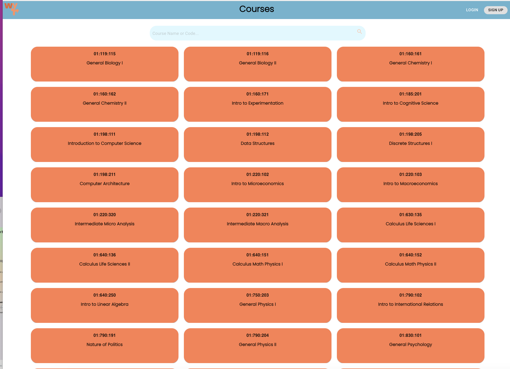
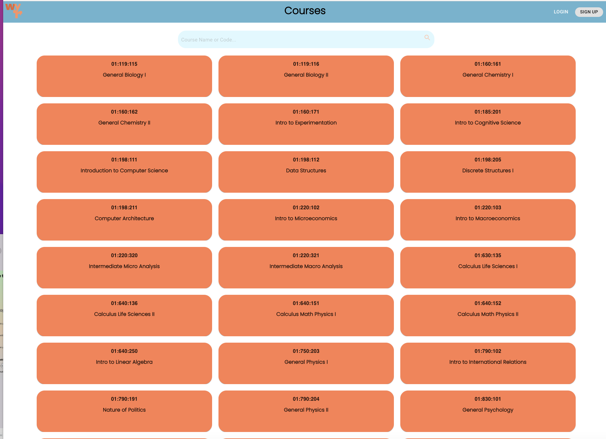

Problem
Students struggle to evaluate professors effectively.
Solution
An intuitive tool for students to share and find reviews.
Impact
Enhanced student-professor matching and course satisfaction.
Learning
Explored user feedback loops and iterative product design.
About Wyr
Wyr is a professor rating platform that simplifies the process of comparing professors and finding the right class. It integrates data from multiple sources, including SIRS and Reddit, for a comprehensive view of professor performance.
Key Features
- Consolidates reviews from 2017 onwards for relevancy
- Provides workload metrics (1-5 scale)
- Includes class-specific reviews rather than general professor ratings
Gallery
 
